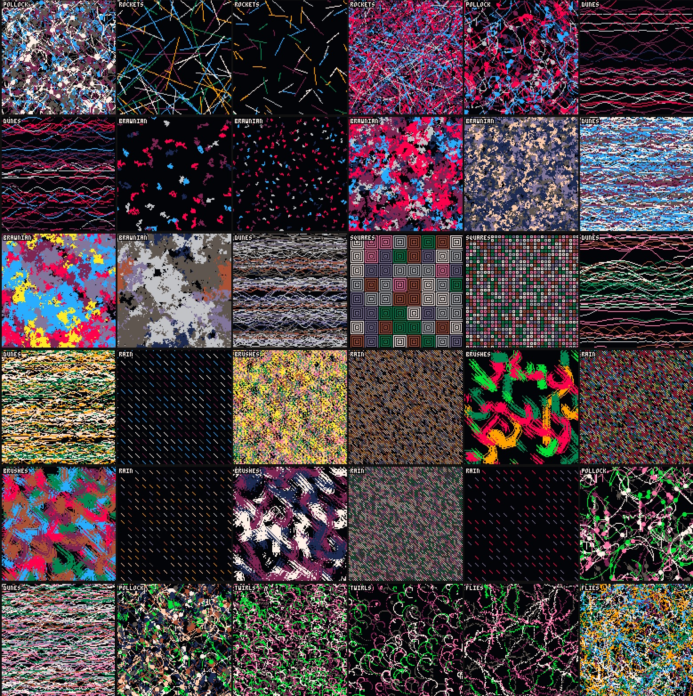
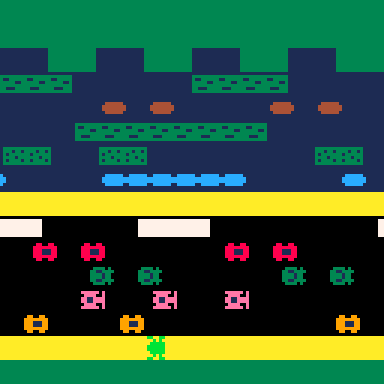
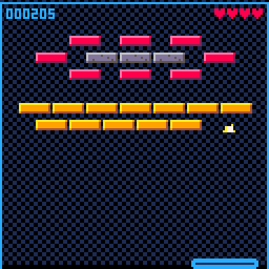
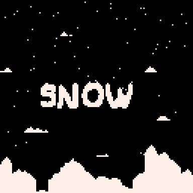

Pico8 is an amazing fantasy console, great for small experiments and minigames. I got the chance to play with it for some days.
Exploring different ways to paint a blank canvas with style. Link
I wanted to try an hypothesis: I don't think that in the Atari version they do any collision detection at all. Instead, they may have gone analytically and use a formula to check whether current position is occupied by an item or not. Play it here (buggy)

A more polished minigame (arkanoid clone). Play it here.

Classic snow effect, with pixel collisions.
Classic demoscene effect. Play it here